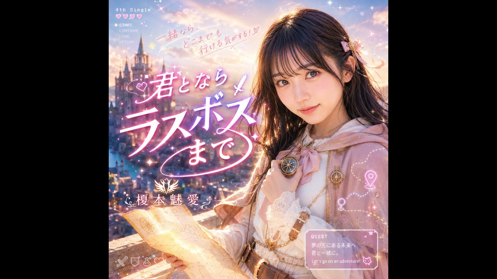
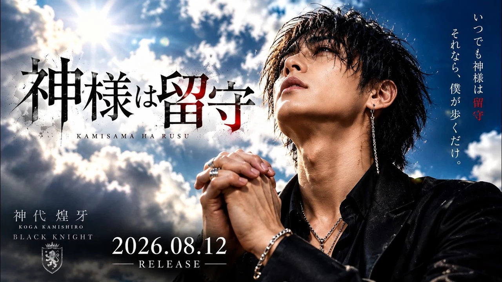
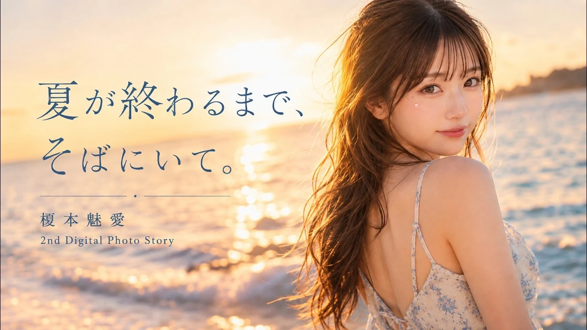
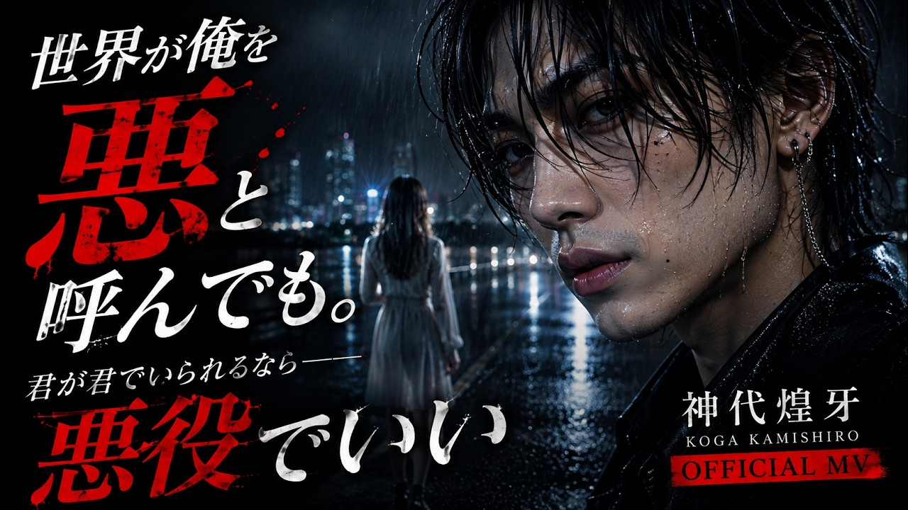
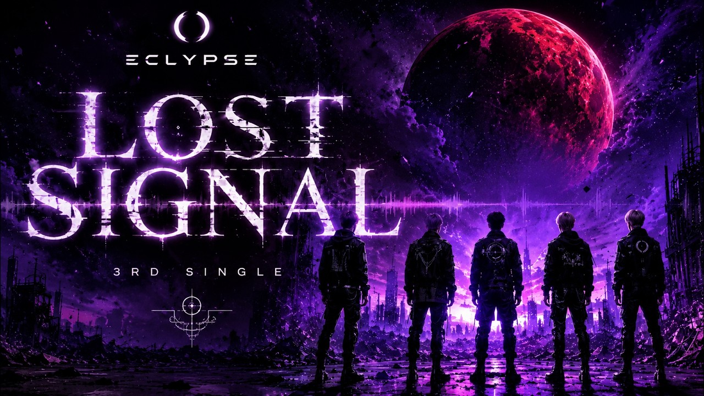

YouTubeチャンネル運用変更のお知らせ
SUZUKA公式YouTubeチャンネルと、榎本魅愛・妃みちる・神代煌牙の各公式YouTubeチャンネルの今後の運用についてお知らせします。
記事を読む ↗OFFICIAL UPDATES
デビュー、リリース、アーティスト情報。
LATEST STORIES
SUZUKA公式YouTubeチャンネルと、榎本魅愛・妃みちる・神代煌牙の各公式YouTubeチャンネルの今後の運用についてお知らせします。
記事を読む ↗
妃みちる「世代を超えてママへ」が2026-10-02にストリーミング配信を開始しました。MV公開日と配信日は個別に管理しています。
記事を読む ↗
榎本魅愛「Without worrying - Reimagined -」の先行音源公開のお知らせ。公式動画と作品情報をご紹介します。
記事を読む ↗
榎本魅愛「恋禁区。」のOFFICIAL MV公開のお知らせ。公式動画と作品情報をご紹介します。
記事を読む ↗
榎本魅愛「君とならラスボスまで」が2026-10-01にストリーミング配信を開始しました。MV公開日と配信日は個別に管理しています。
記事を読む ↗
妃みちるの公式Artistチャンネルで「私の選んだ道」のOFFICIAL VIDEOを公開。既存のSUZUKA公開版も作品ページからご覧いただけます。
記事を読む ↗榎本魅愛の公式Artistチャンネルで「キャラメ〜ル」のOFFICIAL VIDEOを公開。既存のSUZUKA公開版も作品ページからご覧いただけます。
記事を読む ↗
神代煌牙の公式Artistチャンネルで「LEO — Rise Again —」のOFFICIAL VIDEOを公開。既存のSUZUKA公開版も作品ページからご覧いただけます。
記事を読む ↗
神代煌牙の公式Artistチャンネルで「神様は留守」のOFFICIAL VIDEOを公開。既存のSUZUKA公開版も作品ページからご覧いただけます。
記事を読む ↗
榎本魅愛の公式Artistチャンネルで「夏が終わるまで、そばにいて。」のOFFICIAL VIDEOを公開。既存のSUZUKA公開版も作品ページからご覧いただけます。
記事を読む ↗妃みちるの公式Artistチャンネルで「UPdown」のOFFICIAL VIDEOを公開。既存のSUZUKA公開版も作品ページからご覧いただけます。
記事を読む ↗妃みちる「心に残る宝モノ」のストリーミング配信開始をお知らせします。2026年9月29日リリース。確認済みの公式LinkCoreから各サービスへ進めます。
記事を読む ↗
榎本魅愛の公式Artistチャンネルで「夢と、介護と、私たち。」のMV / 89秒版を公開。既存のSUZUKA公開版も作品ページからご覧いただけます。
記事を読む ↗
神代煌牙の公式Artistチャンネルで「魔法が解けても ― Pumpkin Carriage ―」のちょいMV / 15秒版を公開。既存のSUZUKA公開版も作品ページからご覧いただけます。
記事を読む ↗
榎本魅愛「恋愛対象外 (仮)」が2026-09-26にストリーミング配信を開始しました。MV公開日と配信日は個別に管理しています。
記事を読む ↗
神代煌牙「何度生まれ変わっても - RE:BORN OATH -」が2026-09-26にストリーミング配信を開始しました。MV公開日と配信日は個別に管理しています。
記事を読む ↗
榎本魅愛「Eternity of Flower Words」が2026-09-26にストリーミング配信を開始しました。MV公開日と配信日は個別に管理しています。
記事を読む ↗
妃みちる「HELLO, LIFE!」の先行音源公開のお知らせ。公式動画と作品情報をご紹介します。
記事を読む ↗
神代煌牙の公式Artistチャンネルで「分かれた道」のOFFICIAL MVを公開。既存のSUZUKA公開版も作品ページからご覧いただけます。
記事を読む ↗妃みちるの公式Artistチャンネルで「世代を超えてママへ」のOFFICIAL MVを公開。既存のSUZUKA公開版も作品ページからご覧いただけます。
記事を読む ↗
妃みちるの1st Digital Photo Book『ありのまま。 — Just As I Am. —』がnoteで公開されました。
記事を読む ↗
榎本魅愛「また、君に恋をする。」が2026年9月23日にストリーミング配信を開始しました。
記事を読む ↗
榎本魅愛の5曲入りアルバム「恋するすべての瞬間」が2026年9月23日にストリーミング配信を開始しました。
記事を読む ↗榎本魅愛の公式Artistチャンネルで「タイパなんて知らなかった」のOFFICIAL MVを公開。既存のSUZUKA公開版も作品ページからご覧いただけます。
記事を読む ↗
榎本魅愛の公式Artistチャンネルで「September Blue」のOFFICIAL MVを公開。既存のSUZUKA公開版も作品ページからご覧いただけます。
記事を読む ↗2026-09-20に配信開始した妃みちる「たった1人の君へ」の公式配信リンクをSUZUKA Newsでお知らせします。
記事を読む ↗2026-09-22に配信開始した榎本魅愛「September Blue」の公式配信リンクをSUZUKA Newsでお知らせします。
記事を読む ↗
2026-09-22に配信開始した榎本魅愛「Over Drive」の公式配信リンクをSUZUKA Newsでお知らせします。
記事を読む ↗2026-09-20に配信開始した妃みちる「friend like song」の公式配信リンクをSUZUKA Newsでお知らせします。
記事を読む ↗
VEILFANG「輪廻ノ契 -RINNE NO CHIGIRI-」の先行音源公開のお知らせ。公式動画と作品情報をご紹介します。
記事を読む ↗榎本魅愛の公式Artistチャンネルで「君とならラスボスまで」のOFFICIAL MVを公開。既存のSUZUKA公開版も作品ページからご覧いただけます。
記事を読む ↗
神代煌牙の公式Artistチャンネルで「悪役でいい」のMV告知 / 61秒版を公開。既存のSUZUKA公開版も作品ページからご覧いただけます。
記事を読む ↗
妃みちるの音楽を届けるYouTube「妃みちる Official Channel」のオープンがnoteで公式発表されました。チャンネルの直接URLは確認できた時点で追加します。
記事を読む ↗榎本魅愛の「百万告」「取り扱いチューい」「Hello Hello Halloween」が2026年9月21日に各音楽配信サービスで配信開始されました。
記事を読む ↗妃みちるの公式Artistチャンネルで「friend like song」のOFFICIAL VIDEOを公開。既存のSUZUKA公開版も作品ページからご覧いただけます。
記事を読む ↗
RE:VIVE「君がいる方角へ」の先行音源公開のお知らせ。公式動画と作品情報をご紹介します。
記事を読む ↗
ECLYPSE「달콤한 죽음을 그대에게」の先行音源公開のお知らせ。公式動画と作品情報をご紹介します。
記事を読む ↗
榎本魅愛「Hello Hello Halloween」Official MV公開と、2026年9月21日のストリーミング配信情報をSUZUKA Newsで案内します。
記事を読む ↗
NOX「返品された人間」の先行音源公開のお知らせ。公式動画と作品情報をご紹介します。
記事を読む ↗
ASTERIA「金木犀と星降る夜」の先行音源公開のお知らせ。公式動画と作品情報をご紹介します。
記事を読む ↗神代煌牙「魔法が解けても ― Pumpkin Carriage ―」Official MV公開中。10月3日のストリーミング配信予定と公式LinkCoreを追加しました。
記事を読む ↗榎本魅愛「百万告」「Hello Hello Halloween」は2026年9月21日にストリーミング配信開始。公式LinkCoreの配信サービス案内を確認。「百万告」の作品公開日は7月12日、「Hello Hello Halloween」のOfficial MV公開日は9月16日です。
記事を読む ↗
榎本魅愛 / ENOMOTO MIA「花言葉」が2026年9月18日（金）より全国のJOYSOUND対応機種にて公式音源でカラオケ配信決定。JOYSOUND特別クーポンもご案内します。
記事を読む ↗榎本魅愛「花言葉」が2026年9月11日より各音楽配信サービスでリリース。Apple Music、Spotify、YouTube Music、Amazon Music等で順次配信予定。配信サービスの情報はLinkCoreでご確認ください。
記事を読む ↗妃みちるの新曲「世代を超えてママへ」を公開。今子育てをしている人、子育てを終えた人、家族を支えてきたすべてのママへ感謝を届けます。
記事を読む ↗介護の現場で働く人たちと、仕事の中でも夢を大切にするすべての人へ贈る榎本魅愛の新曲。
記事を読む ↗
白狼・孤闘と九尾狐・九羅護が、月下の契りと運命を歌うVEILFANGのデビューシングル。
記事を読む ↗
世界に悪と呼ばれても、大切な人が選んだ道の隣にいるという神代煌牙の護る決意を歌う新曲。
記事を読む ↗アニメ「それでも、僕は君を探していた」のオープニングテーマ決定を伝える公式映像。アニメ本編の公開日は未定。
記事を読む ↗
死の後だけ届く優しさと、悲しみさえ投稿に変えるSNS時代を風刺するNOXのダークロック。
記事を読む ↗
おしゃべりな人魚姫を守りたい青年の恋を描く、神代煌牙の夏の物語。
記事を読む ↗
青い花と二人の時間に、終わらない愛の言葉を重ねる榎本魅愛の最新シングル。
記事を読む ↗
暗闇さえ星に変え、涙を光にするASTERIAの希望と寄り添いのアイドルソング。
記事を読む ↗
記憶が薄れても残り続ける夫婦愛を歌う、朝霧しのぶのセカンドシングル。
記事を読む ↗
遠回りや失敗も未来へつながると歌う、榎本魅愛の爽やかなJ-POP。
記事を読む ↗
立ち上がれる日までそばにいるという思いを描くRE:VIVEの2nd Single。
記事を読む ↗
正義、偽善、無関心を問い、自分自身を裁く夜の法廷を描くNOXの2nd Single。
記事を読む ↗
満たされない孤独と離れられない想いを、危うい口づけの物語として描く神代煌牙のダークなラブソング。
記事を読む ↗
途切れた信号と失われない絆を、韓国語を中心としたダークK-POPサウンドで描くECLYPSEの3rd Single。
記事を読む ↗
笑顔の裏で涙を抱える人へ、焦らずそのままでいいと寄り添う榎本魅愛のバラード。
記事を読む ↗
RANGILI「恋するマハラジャ」のSUZUKA公式作品ページ。
記事を読む ↗
人間の本能と社会への問いを、ダークなバンドサウンドと物語で描くNOXのデビュー作品。
記事を読む ↗不安な夜を越え、明日への希望と無事を祈る榎本魅愛の楽曲。
記事を読む ↗
傷ついた心に寄り添い、もう一度立ち上がる力を届けるRE:VIVEのデビュー作品。
記事を読む ↗
幼い頃の約束と消えない面影をたどり、終わらない恋の残響を描く神代煌牙の物語作品。
記事を読む ↗
インドの情熱と日本のメロディが響き合う、RANGILIの公式デビュー作品。
記事を読む ↗
認知症、家族、記憶、人生をテーマに、忘れても残る愛を歌う朝霧しのぶの演歌作品。
記事を読む ↗
好きだからこそ相手を手放し、最後は笑顔で別れたいと願う切ないバラード。
記事を読む ↗
夕暮れの海を舞台に、大切な人を守り抜く覚悟と永遠の誓いを描いた神代煌牙のラブソング。
記事を読む ↗
赤い月と崩壊した近未来都市を舞台に、壊れたコードの先で5人の運命が再び動き始めるECLYPSEの2nd Single。
記事を読む ↗榎本魅愛「もしも明日、はじめましてになっても」のSUZUKA公式作品ページ。
記事を読む ↗榎本魅愛「取り扱いチュー💋い」のSUZUKA公式作品ページ。
記事を読む ↗
ECLYPSE「SHADOW//CODE」のSUZUKA公式作品ページ。
記事を読む ↗榎本魅愛「百万告」のSUZUKA公式作品ページ。
記事を読む ↗